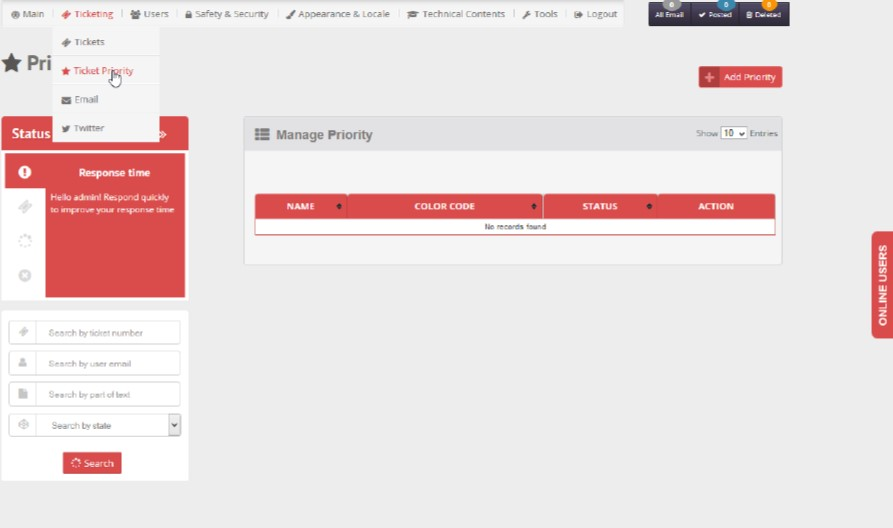
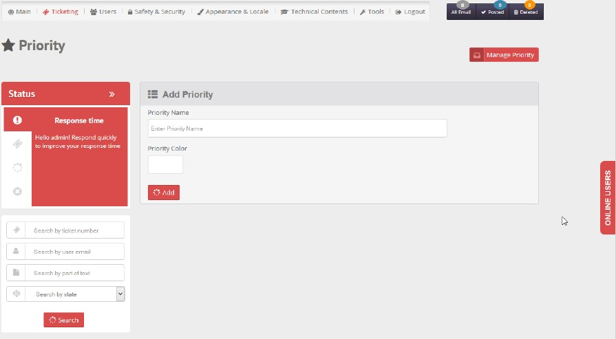
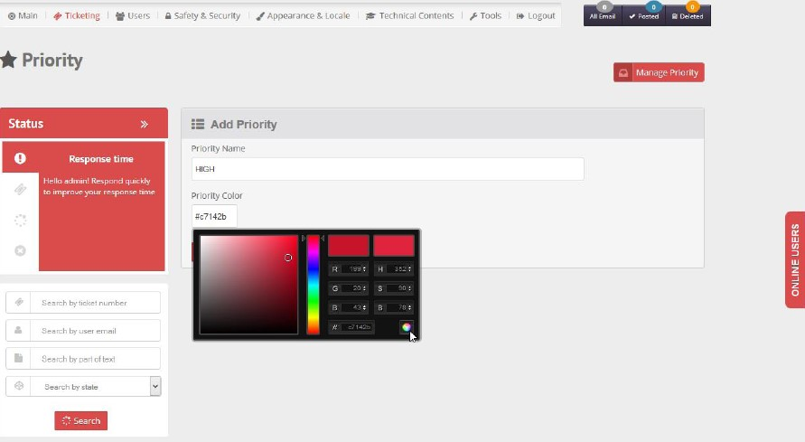

- Select Priority from Main menu. Manage Priories window will open with existing departments list if any.

- Click Add Priority button to add new department. Add Priority form will open. Set priority name and color from color picker [both combination should be unique] then click on add button, “Priority added successfully” notification will display at header to confirm the addition.


- You can use delete icon to delete a priority (only if has no associated tickets at all).
- You can use edit icon to rename a priority's name (Duplicate Entry not possible).
- You can activate/deactivate a department any time by clicking Active-Inactive button. When a department is active it will appear in department list and be available to select; on the other hand when a department is inactive it will not be listed, and thus could not be selected.
Created with the Personal Edition of HelpNDoc: Easy to use tool to create HTML Help files and Help web sites